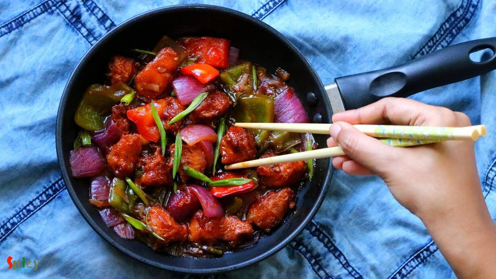
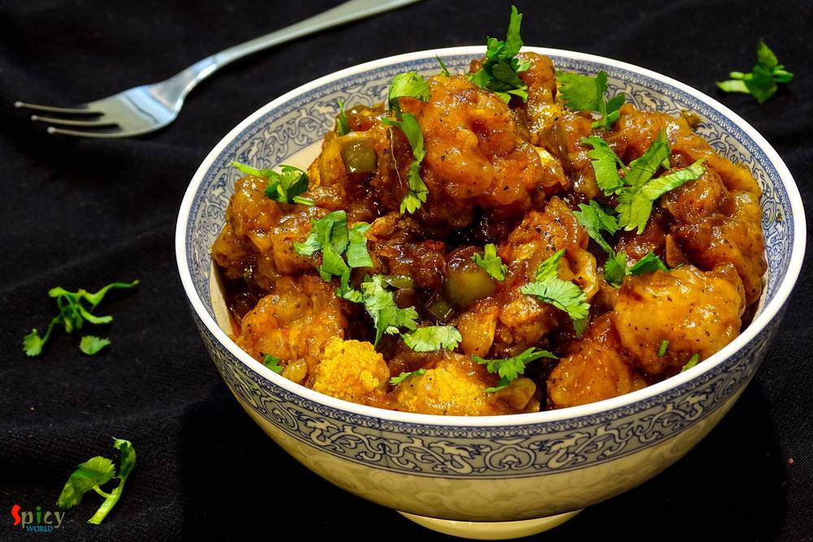
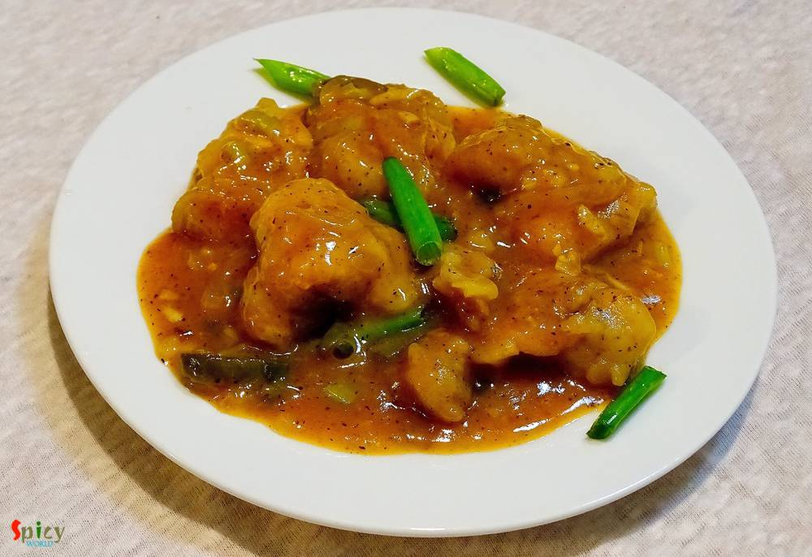
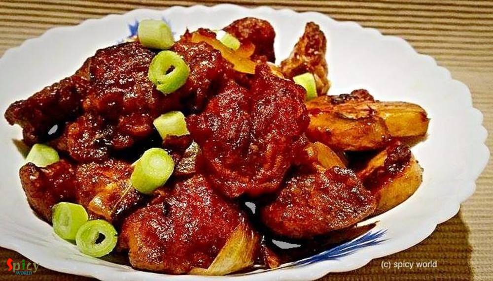

Simple and Easy Recipes
Posts on 'chinese'

Nonveg Recipe
Apr 18, 2019
Either its Bhuna Chicken or Chilli Chicken... now what is Bhuna Chilli Chicken? When left over bhuna (slow cooked) chicken curry got makeover next day by tossing in chilli chicken gravy then this crazy recipe happened in my kitchen. We all were pretty much overwhelmed by the taste of it. I have never thought it will become that much flavorful! It was completely a different dish, you have to try th ...


Nonveg Recipe
Jan 28, 2019
Chicken Hot and Sour Soup is one of the popular soup variety from Chinese cuisine. In this silky, spicy, sour broth you can add almost everything like chicken, egg, tofu and many kinds of vegetable. Hot and sour soup tastes best (especially) during winter or monsoon and it can also uplift your taste buds. Try this easy recipe in your kitchen and let me know how it turned out for you.

Nonveg Recipe
Mar 7, 2019
A super spicy and fiery indo-chinese starter is 'Chicken 65'. In southern part of India, few restaurants first started selling this Chicken 65 as a quick snack and now, people from all around the world knows about Chicken 65. In USA, we get delicious Chicken 65 from Indian restaurants, it is one of our favorite appetizer and that is why I made my mind to make this dish in my kitchen. You can make ...

Nonveg Recipe
Oct 8, 2018
Egg fried rice is a delicious variety of Indo-Chinese fried rices. It's a quick stir fry of rice, veggies and eggs with some seasonings and sauces. The best way to make Egg fried rice is by using left over rice and cooking on high flame, like many Chinese dishes. You can have this fried rice on its own or it can be paired with any manchurian gravy or chili chicken or chili paneer.

Nonveg Recipe
Nov 7, 2018
One of my favorite indo-chinese dish is 'Chili Fish' - which is very similar to Chili Chicken. In this recipe, deep fried fish nuggets will be cooked in a hot and spicy sauce with onions and peppers... so, so delicious ! You can get them in many Chinese restaurants in Kolkata. It tastes heavenly with fried rice or noodles and it is very easy to make. Try this recipe in your kitchen and enjoy with ...

Nonveg Recipe
Aug 23, 2018
I am a really big fan of indo-chinese food, whereas 'he' prefers mughlai or authentic bengali food more. Before marriage, I used to find excuses to go to any restaurant and eat 'chilli chicken' with rumali roti. I know what are you guys thinking. But don't know why I love this combo so much. In every street of Kolkata you can find various indo-chinese restaurants. I mentioned Kolkata style because ...

Nonveg Recipe
Jun 14, 2018
This easy noodles recipe is sure to make your lunch / dinner much better. With egg and veggies the noodles become more addictive and best option for lunch boxes. It used to be my frequent tiffin during school life. You can also add chicken and shrimp to this dish. I have 'Mix Noodles' recipe already in my blog. Do try this delicious recipe in your kitchen and let me know how it turned out for you.

Nonveg Recipe
Apr 17, 2018
Fried rice is everybody's favourite .. agree or not ? You can add whatever ingredient you have in your fridge and thats what happened with me. I had few veggies laying around, so thought why not throw everything with some rice. Best part of this idea - added some chicken strips. After around 10 minutes of stir frying a good wholesome Chicken fried rice was waiting for me to make my soul and tummy ...

Nonveg Recipe
Aug 4, 2016
Chicken Pakoras require no introduction. Specially when they are coated with a sweet and spicy sauce ... I love to eat them more than I love to eat any Chinese takeouts. It's a very kid friendly recipe and you can always control the heat level according to your little ones tastebuds. These tangy, spicy bites are more than yumm ! If you are having guest and you want to serve them a new starter then ...

Veg Recipe
Jun 8, 2016
This dish is an indo-chinese item which is very popular and frequently ordered in restaurants of India. Gobi means cauliflower. The recipe is very similar to chicken manchurian (which I have already posted), except the key ingredient here is cauliflower, not chicken. You can make this dish with potatoes, soya granules or raw jackfruit also. Every single time it tastes delicious and goes best with ...

Nonveg Recipe
Mar 23, 2016
Whenever I buy different types of sauces from market, can't think anything but Chinese dishes. With few ingredients you can creat such a splendid item. So, last of last weekend I went ahead and made 'chicken manchurian', the more I can say about it's delicious tangy and spicy taste the less it seems. We enjoyed it with some fried rice but you can also serve this with hakka noodles or simple rumali ...

Nonveg Recipe
Jan 21, 2016
Almost every one has a slight weakness over chinese food. Taste and flavour of their food is totally unique. In Kolkata, many street food joints sell chinese food like various types of chowmin, chilli chicken, manchurian, lollipops etc. They all tastes really good. Today I am sharing the delicious recipe of 'mix Hakka noodles'. The dish has lots of vegetables, chicken and also egg, that's why the ...
 Fried Rice")
Veg Recipe
Dec 12, 2015
I guess almost everybody love indo-chinese food. The recipe of this fried rice is also indo-chinese and homemade version. I heard from many foodies that in homemade fried rice, there is always lack of that chinese flavour / restaurant flavour. But after following this recipe, you will forget about this complain. You can serve various side dishes with this kind of 'fried rice'. Try this in your kit ...

Nonveg Recipe
Nov 18, 2015
It is almost impossible to find them who doesn't love chinese food, specially 'hakka noodles'. I think, this is the most frequently ordered dish in any indo-chinese restaurant. I, personally don't like any side dish with hakka noodles because this chinese dish has its own magic. I made this noodles in dinner and the taste turned out exceptionally good, the flavour was same like restaurants. Try th ...

Nonveg Recipe
Oct 13, 2015
This is a very simple and easy recipe. You can serve this as starter or maincourse. You can also substitute fish with chicken. It tastes delicious. Try this at your home and tell me about your experience.

Nonveg Recipe
Sep 16, 2015
In India we make chinese food with some own variations, that's why we call it 'indo-chinese'. Egg chicken chowmin is very famous street food from kolkata. You can also get veg chowmin, prawn chowmin, only chicken chowmin etc. But my favourite is this one. Try this at your home, you will get the exact taste of street food.